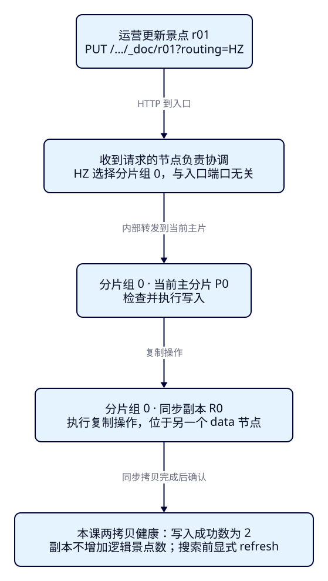
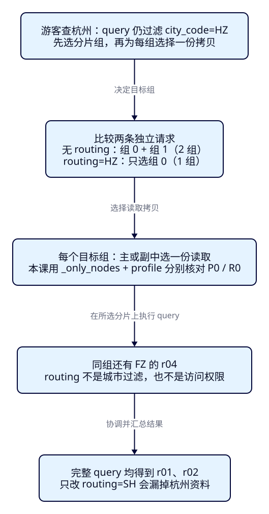

一份景点资料，
写到哪里、从哪里读？
F28已经证明三个入口属于同一集群，游客也能从Java搜索接口看到同样的景点。运营接着按城市导入资料：写入时指定杭州，按ID读取却像“丢了”；换个routing值又偶尔能找到。游客的杭州搜索如果只查一个分片，会不会混入福州，或者漏掉结果？本课沿着同一份资料核对分片组、主副拷贝和请求范围，建立写、读、改、删、查一致的路由约定。
学完能用输出证明什么
- 核对2主2副的布局，用真实分片查询说明默认_id路由，区分逻辑文档数和拷贝数。
- 为自定义routing选择确实跨片及同片的反例，复现404、缺值400和同ID跨片重复，再恢复固定资料。
- 用命中、_shards和profile解释全索引/限定搜索与主副读取，并以REST和官方Java客户端复现。
本课目录
1. 分成两部分，再各留一份拷贝
ES仍负责文档搜索、筛选与排序；业务数据库仍是业务事实的来源。集群不会因为多了入口就把每份景点独立保存三遍。本课把6份景点分成两个逻辑分片，每个分片有一份当前主拷贝和一份副拷贝，合称一个分片组。主分片数为2，number_of_replicas为1，含义是每个主分片配1份副本，共4份物理分片拷贝，逻辑景点仍是6份。
复制组内的主拷贝负责接受并验证写入，再把操作复制给同步副本。副本也执行写操作来保持数据一致，只是普通客户端写入先交给当前主片。集群在正常写入确认中维护同步拷贝集合；本课健康布局下显式等待全部两拷贝可用，再核对每条写入的_shards.successful=2。不把这个局部观测解释成任何故障下永远两份成功。
写入成功与搜索可见仍是两件事。本课refresh_interval=-1，写完明确refresh；副本不会免除这个步骤。读请求可以选主或副的一份拷贝。两份都读一遍再拼结果会把同一景点算两次，普通完整搜索不这样做。主副角色是当前分片拷贝的角色，也不是“当前master节点”：F28的专用master不保存这些业务分片。

2. routing选分片组，不选入口或城市条件
请求到达19331，并不表示文档写在那个节点的本地分片。收到请求的节点先协调，再根据路由确定分片组，把写入交给该组当前主片。未给routing时，本课普通索引用_id作为有效路由值；给了routing=HZ，就以HZ替代_id来选组。它不会自动读取_source里的city_code，正文和Bulk元数据中都必须把业务城市与路由约定写清。
限定本课在9.4.0新建、普通未分区、未配置routing_path、没有进行resize的索引，选择规则是Math.floorMod(Murmur3(有效路由值), 主分片数)。这里是对2取非负余数，所以只有0或1。floorMod处理负哈希；不要照搬某些语言对负数的%结果。字符串取值远多于分片数，不同routing落在同一片十分正常。本课实测HZ→0、FZ→0、SH→1；先用_search_shards确认，再设计错值。
版本条件属于索引，不只属于节点。9.4.0节点上的旧索引可能继续使用旧路由规则：floorMod(hash, number_of_routing_shards) / routingFactor，routingFactor为路由分片数除以主分片数。本课不拿旧索引套新公式，也不在读者端重写哈希实现；由ES输出证明实际shard。主副的物理节点还可能变化，应用不应保存“HZ永远在es2”这样的地址表。
固定版本依据与适用范围
官方_routing说明列出9.4.0创建版本分支、必填与ID唯一性边界；v9.4.0 IndexRouting.shouldUseShardCountModRouting / hashToShardId按creationVersion分支，Unpartitioned.shardId选择routing或id，getShard/updateShard/deleteShard使用同一规则。Partitioned与从_source提取路由是别的分支，不在本课推广。TransportGetAction.shards把id/routing传给路由选择；ReplicationOperation.execute / handlePrimaryResult / performOnReplicas核对主片结果与复制阶段。源码字节核对记录将版本与官方文档分开保存。
3. 用隔离三节点，保留能手工数清的样本
继续使用F28的角色形状，另起es-framework-f29，三个宿主HTTP入口为127.0.0.1的19329/19330/19331，分别对应master专用、master/data/ingest、master/data。两个data节点承载本课分片，Java连接19330。容器内部仍走9300通信，不对宿主发布transport；无认证、无浏览器直连ES的CORS。三个进程同在一台Docker VM，不代表跨机器容灾或生产容量。
完整稳定配置和仅首次引导配置均保留。首次start只在三份专属卷都不存在时引导，形成共同UUID后立即移除实际运行中的initial_master_nodes，并复验UUID/node ID。已有完整卷时直接稳定启动，部分缺失时拒绝自动引导。收据目录必须全新；以下命令从仓库根目录开始：
cd projects/travel-search
python3 labs/f29/lab.py start --out /tmp/f29-reader-setup再在另一终端配置完整JDK25的JAVA_HOME和PATH，构建并运行已有F07服务。Boot4.0.8、Java API Client/Rest5 Client9.4.8沿用已锁定依赖；本课不改Controller、查询服务或前端。
cd projects/travel-search/backend
./mvnw -B -ntp clean package dependency:build-classpath -Dmdep.outputFile=target/f29-classpath.txt
ES_URL=http://127.0.0.1:19330 ES_INDEX=tut-f29-default APP_PORT=18081 java -jar target/travel-search-0.7.0.jar回到第一终端，也配置同一JDK，再开始实验。仅使用tut-f29-default和tut-f29-routed，清理不触碰F28、其他课次或业务资源：
export APP_URL=http://127.0.0.1:18081
export ES_URL=http://127.0.0.1:19330
export F29_OUT=/tmp/f29-reader-round1
python3 labs/f29/lab.py cleanup --out "$F29_OUT/before"窄屏提示：代码、表格、图可在各自框内右滚动，图可展开。脚本是配套证据，理解重点是先预测、再读ID、shard和真实字段；完整手工请求/样本见本机实验入口。
4. f29-c01：不带routing，文档怎样分布？
默认索引使用p01–p06。p01/p02是杭州在售且预算内的“西湖”，p03超预算，p04在福州，p05已关闭，p06不含西湖词项。名称用带空格的合成语料和whitespace，避免把本课变成分词课；价格是CNY整数分，中心30.25/120.15、半径3km。固定JSON及末尾带换行的NDJSON各自保存，真实票价或营业情况不由它们代表。
下面是完整建索引请求体；PUT /tut-f29-default。两个索引都显式设2主1副、strict与refresh=-1，避免默认配置变化影响结论：
{
"settings": {
"number_of_shards": 2,
"number_of_replicas": 1,
"refresh_interval": "-1"
},
"mappings": {
"dynamic": "strict",
"properties": {
"attraction_id": {
"type": "keyword"
},
"name": {
"type": "text",
"analyzer": "whitespace"
},
"city_code": {
"type": "keyword"
},
"ticket_price_fen": {
"type": "integer",
"coerce": false
},
"currency": {
"type": "keyword"
},
"status": {
"type": "keyword"
},
"location": {
"type": "geo_point"
}
}
}
}python3 labs/f29/lab.py default --out "$F29_OUT/default"只手工重放时：创建、Bulk和刷新
手工与脚本二选一，不能在脚本已建好资源后再创建。同名索引重复PUT会冲突，NDJSON的create重复写会出现条级409；外层200不表示逐条成功。
curl --fail-with-body -sS -X PUT "$ES_URL/tut-f29-default" -H 'Content-Type: application/json' --data-binary @search/f29/create-default.json
curl --fail-with-body -sS -X POST "$ES_URL/tut-f29-default/_bulk?wait_for_active_shards=all" -H 'Content-Type: application/x-ndjson' --data-binary @data/f29/attractions.ndjson
curl --fail-with-body -sS -X POST "$ES_URL/tut-f29-default/_refresh"先预测每个_id对应哪个组，再看两种证据。_search_shards?routing=p01只计算“这个值会选哪组”，它不证明文档实际存在；因此脚本还按_shards:0/1分别搜索，逐份比对_source，再将每个实际_id与路由计算交叉核对。
GET /tut-f29-default/_search_shards?routing=p01
GET /_cat/shards/tut-f29-default?format=json&h=index,shard,prirep,state,docs,node
POST /tut-f29-default/_search?preference=_shards:0&allow_partial_search_results=false
{"size":20,"track_total_hits":true,"query":{"match_all":{}},"sort":[{"attraction_id":"asc"}]}
POST /tut-f29-default/_search?preference=_shards:1&allow_partial_search_results=false
{"size":20,"track_total_hits":true,"query":{"match_all":{}},"sort":[{"attraction_id":"asc"}]}
GET /tut-f29-default/_doc/p01正式两轮实际分布均为：0组p04/p05，1组p01/p02/p03/p06；两轮均看到4行STARTED，每组各一p一r且分处两个data节点；主分片docs之和为6，连副本相加为12，不能说有12个景点。三个入口执行同一完整搜索均得到p01/p02，_shards.total=2。主副分配到哪个节点由实际布局决定，不能用green替代mapping、创建版本、字段或路由核对。
完整搜索条件：先保持业务语义，再观察路由
POST /tut-f29-default/_search?allow_partial_search_results=false。命中按attraction_id排序，本课不比较BM25的推荐质量或took。
{
"size": 20,
"track_total_hits": true,
"track_scores": true,
"_source": {
"includes": [
"attraction_id",
"name",
"city_code",
"ticket_price_fen",
"currency",
"status",
"location"
]
},
"query": {
"bool": {
"must": [
{
"match": {
"name": {
"query": "西湖",
"operator": "or"
}
}
}
],
"filter": [
{
"term": {
"city_code": {
"value": "HZ"
}
}
},
{
"term": {
"currency": {
"value": "CNY"
}
}
},
{
"range": {
"ticket_price_fen": {
"gte": 0.0,
"lte": 20000.0
}
}
},
{
"term": {
"status": {
"value": "open"
}
}
},
{
"geo_distance": {
"distance": "3.0km",
"distance_type": "arc",
"location": {
"lat": 30.25,
"lon": 120.15
}
}
}
]
}
},
"sort": [
{
"attraction_id": {
"order": "asc"
}
}
]
}5. f29-c02：正确、缺失和“写错却读得到”
运营现在约定按city_code给routing。路由索引的字段与默认索引相同，额外加_routing.required=true；完整请求体见create-routed.json。这层约束只防漏传，ES不替业务检查传入值是否正确，也不自动保证全索引_id唯一。后续查询不因此强制要求routing。
"_routing": { "required": true }路由索引的完整创建请求体：PUT /tut-f29-routed
{
"settings": {
"number_of_shards": 2,
"number_of_replicas": 1,
"refresh_interval": "-1"
},
"mappings": {
"dynamic": "strict",
"properties": {
"attraction_id": {
"type": "keyword"
},
"name": {
"type": "text",
"analyzer": "whitespace"
},
"city_code": {
"type": "keyword"
},
"ticket_price_fen": {
"type": "integer",
"coerce": false
},
"currency": {
"type": "keyword"
},
"status": {
"type": "keyword"
},
"location": {
"type": "geo_point"
}
},
"_routing": {
"required": true
}
}
}这批r01–r06是新的固定资料。r01/r02/r05以HZ写入0组，r03/r06以SH写入1组，r04以FZ写入0组；r04不是杭州景点，却与杭州同片。完整JSON与Bulk数据保留每份元数据和_source，路由写在每条create元数据的routing中，不是只给Bulk外层猜一个值。
python3 labs/f29/lab.py routing --out "$F29_OUT/routing"先用以下请求确认HZ与SH跨片、HZ与FZ同片。与单主分片实验相比，双主分片才有机会观察跨片错误；但不是任意两个字符串都会分开。
GET /tut-f29-routed/_search_shards?routing=HZ
GET /tut-f29-routed/_search_shards?routing=SH
GET /tut-f29-routed/_search_shards?routing=FZ
GET /tut-f29-routed/_doc/r01?routing=HZ
GET /tut-f29-routed/_doc/r01?routing=SH
GET /tut-f29-routed/_doc/r01
GET /tut-f29-routed/_doc/r01?routing=FZ| 读取r01 | 实际状态 | 原因与下一步 |
|---|---|---|
| routing=HZ | 200 / found=true | 定位0组，_routing为HZ，价格6000分。 |
| routing=SH | 404 / found=false | 定位1组；当前这个_id不在那里，不表示全索引丢失。 |
| 省略routing | 400 | routing_missing_exception；必填约束先拒绝，不能写成默认按_id找不到。 |
| routing=FZ | 200 / found=true | 不同值碰巧也到0组，返回的存储_routing仍为HZ；成功不证明路由正确。 |
应用需要保存或可重建同一业务ID的路由值，写读改删一直携带。更新和删除也不会先遍历全索引替你寻找_id。脚本先用SH更新r01，得到document_missing_exception的404；正确HZ更新为7000分，实时GET核对；SH删除返回not_found，正确副本仍能读到7000分。省略路由的写入也由required返回400。
POST /tut-f29-routed/_update/r01?routing=SH
{"doc":{"ticket_price_fen":7000}}
POST /tut-f29-routed/_update/r01?routing=HZ
{"doc":{"ticket_price_fen":7000}}
DELETE /tut-f29-routed/_doc/r01?routing=SH
GET /tut-f29-routed/_doc/r01?routing=HZ更隐蔽的错误是把相同_id改用另一个跨片routing重新PUT。它会在1组创建第二份r01，不是把0组的资料搬过去。脚本故意以SH写入城市SH、价格9900分的r01，再refresh并用ids查询：两个命中有相同_id、不同_routing与_source。即使两组都是green，业务ID也已重复。应用的全局唯一约束要自己维护，不能用成功201当作迁移完成。
PUT /tut-f29-routed/_doc/r01?routing=SH&wait_for_active_shards=all
{
"attraction_id": "r01",
"name": "西湖 湖畔",
"city_code": "SH",
"ticket_price_fen": 9900,
"currency": "CNY",
"status": "open",
"location": {
"lat": 30.25,
"lon": 120.15
}
}POST /tut-f29-routed/_search?allow_partial_search_results=false
{"size":20,"track_total_hits":true,"query":{"ids":{"values":["r01"]}}}
DELETE /tut-f29-routed/_doc/r01?routing=SH
POST /tut-f29-routed/_update/r01?routing=HZ
{"doc":{"ticket_price_fen":6000}}
POST /tut-f29-routed/_refresh重复写的完整_source也由配套实现routing函数明确构造，不隐藏业务字段。完成后只剩r01/HZ且价格恢复6000分，全6份资料将在下一案例逐字段核对。本课练习的是错误定位与恢复，不把“删除后重写”扩展成线上跨路由迁移方案。
6. f29-c03：routing缩小范围，query决定条件
GET按_id定位一份资料，搜索则先选择参与查询的分片组。未带routing时，覆盖本课两个组；routing=HZ只选0组。但“只搜0组”不等于“只返回杭州”，因为FZ的r04也在这里。每个目标组内仍要执行同一套查询条件，协调节点再汇总。_shards.total指这次搜索涉及的组数，不能把它读成节点数或所有主副物理拷贝数。

python3 labs/f29/lab.py reads --out "$F29_OUT/reads"POST /tut-f29-routed/_search?allow_partial_search_results=false
{"size":20,"track_total_hits":true,"query":{"match_all":{}},"sort":[{"attraction_id":"asc"}]}
POST /tut-f29-routed/_search?routing=HZ&allow_partial_search_results=false
{"size":20,"track_total_hits":true,"query":{"match_all":{}},"sort":[{"attraction_id":"asc"}]}
POST /tut-f29-routed/_search?routing=HZ,SH&allow_partial_search_results=false
{"size":20,"track_total_hits":true,"query":{"match_all":{}},"sort":[{"attraction_id":"asc"}]}| 请求范围 | _shards.total | match_all实际ID |
|---|---|---|
| 无routing | 2 | r01–r06，共6份。 |
| routing=HZ | 1 | r01/r02/r04/r05，包含福州r04与关闭r05。 |
| routing=HZ,SH | 2 | r01–r06；按目标分片组去重，不是每个路由值重查一遍。 |
接着给路由索引使用第4节完整search.json：西湖、HZ、在售、CNY、预算20000分、3km。无routing与routing=HZ均命中r01/r02，但分别覆盖2组和1组。只把路由改成SH、保留HZ过滤，返回200且0命中：查询执行成功，不代表覆盖了正确数据。不能在丢失候选后再靠filter补回来。
curl --fail-with-body -sS -X POST "$ES_URL/tut-f29-routed/_search?allow_partial_search_results=false" -H 'Content-Type: application/json' --data-binary @search/f29/search.json
curl --fail-with-body -sS -X POST "$ES_URL/tut-f29-routed/_search?routing=HZ&allow_partial_search_results=false" -H 'Content-Type: application/json' --data-binary @search/f29/search.json
curl --fail-with-body -sS -X POST "$ES_URL/tut-f29-routed/_search?routing=SH&allow_partial_search_results=false" -H 'Content-Type: application/json' --data-binary @search/f29/search.json限定路由能够减少这次涉及的组数，不能仅凭两个小索引宣称请求更快或容量提升了多少。城市规模若悬殊，把最大城市聚在一组还可能形成热点。routing也不是访问权限边界，不能代替认证授权；权限连接在F35展开。是否值得采用，应由真实分布和负载评估，本课只核对语义。
7. 怎样证明副本真的能读，而不是猜它参与了？
_search_shards列出目标组的候选拷贝，单看它不能证明本次由哪一份执行。正常搜索从每个目标组挑一份可用拷贝，默认使用自适应副本选择，综合先前响应、执行与队列等信号；不能要求多点几次就一定轮到副本。为了获得可核对证据，本课先查HZ的候选节点ID，再分别用_only_nodes限制节点并开启profile。
GET /tut-f29-routed/_search_shards?routing=HZ
POST /tut-f29-routed/_search?routing=HZ&preference=_only_nodes:NODE_ID&allow_partial_search_results=false
{"size":20,"track_total_hits":true,"profile":true,"query":{"bool":{"filter":[{"term":{"city_code":"HZ"}},{"term":{"status":"open"}}]}},"sort":[{"attraction_id":"asc"}]}固定样本里这条简化手工请求也只得到r01/r02；正式脚本仍用完整search.json加profile，包含全部关键词、价格与距离条件。读profile.shards的id里的节点/索引/shard，再把节点ID关联到_search_shards的primary布尔值。两份都返回r01/r02，均_shards.total=1、failed=0，分别对应当前P0和R0，说明同一逻辑组可由主或副提供读取。
这项实验没有把正常搜索固定到物理节点：_only_nodes用于诊断，节点移动或不可用时可能不再有合格拷贝。profile有额外观测成本，也不是生产默认参数。官方搜索路由说明与v9.4.0 OperationRouting.searchShards / preferenceActiveShardIterator分别解释目标组与拷贝选择；官方读写模型说明复制组职责，不将本课结果外推为故障恢复验收。
8. REST的路由参数，在Java里也要明确携带
本机观察窗继续连默认索引，用户操作与F28相同：打开本机景点搜索，输入西湖、HZ、200元与固定圆心/3km，应见p01/p02；改成50元只见p02。真实路径是浏览器→Java→ES。展示壳没有routing输入，本课没有把该输入伪装成已实现的网页功能；自定义路由由下方独立官方Java客户端与REST观察。
独立实验复用F07的AttractionSearchService.request构造完整DSL，然后额外指定索引、routing和拒绝部分结果。routing属于请求地址参数，不会出现在序列化的DSL请求体中；核对时要把目标索引/地址参数与body一起比较。GET/PUT/update/delete都传同一HZ，缺值400与跨片404不能吞成成功空列表。
String path = "/" + INDEX + "/_doc/java-probe?routing=" + RIGHT;
var absent = client.get(g -> g.index(INDEX).id("java-probe").routing(RIGHT), Map.class);
record(client, "GET", path, Map.of(), absent);
check(!absent.found(), "Probe exists: inspect and clean explicitly before repeating");
var written = client.index(i -> i.index(INDEX).id("java-probe").routing(RIGHT)
.waitForActiveShards(w -> w.count(2)).document(source));
record(client, "PUT", path + "&wait_for_active_shards=2", source, written);
check(written.result().jsonValue().equals("created") && written.shards().successful().intValue() == 2,
"Expected primary plus replica write");
var got = client.get(g -> g.index(INDEX).id("java-probe").routing(RIGHT), Map.class);
record(client, "GET", path, Map.of(), got);
check(got.found() && got.source().equals(source), "GET must use the write routing");
var updated = client.update(u -> u.index(INDEX).id("java-probe").routing(RIGHT)
.doc(Map.of("ticket_price_fen", 7100)), Map.class);
record(client, "POST", "/" + INDEX + "/_update/java-probe?routing=" + RIGHT,
Map.of("doc", Map.of("ticket_price_fen", 7100)), updated);
check(updated.result().jsonValue().equals("updated"), "Update failed");
var changed = client.get(g -> g.index(INDEX).id("java-probe").routing(RIGHT), Map.class);
record(client, "GET", path, Map.of(), changed);
check(((Number) changed.source().get("ticket_price_fen")).intValue() == 7100, "Wrong updated price");
var deleted = client.delete(d -> d.index(INDEX).id("java-probe").routing(RIGHT));
record(client, "DELETE", path, Map.of(), deleted);
check(deleted.result().jsonValue().equals("deleted"), "Delete failed");
var gone = client.get(g -> g.index(INDEX).id("java-probe").routing(RIGHT), Map.class);
record(client, "GET", path, Map.of(), gone);
check(!gone.found(), "Delete did not remove probe"); var service = new AttractionSearchService(client, INDEX, JSON);
var input = new SearchInput("西湖", "HZ", 20000, 30.25, 120.15, 3.0);
String dsl = JsonpUtils.toJsonString(service.request(input), client._jsonpMapper());
for (String route : List.of("", RIGHT, WRONG)) {
SearchRequest request = SearchRequest.of(s -> {
s.withJson(new StringReader(dsl)).index(INDEX).allowPartialSearchResults(false);
if (!route.isEmpty()) s.routing(route);
return s;
});
var result = client.search(request, Map.class);
record(client, "POST", "/" + INDEX + "/_search?allow_partial_search_results=false"
+ (route.isEmpty() ? "" : "&routing=" + route), JSON.readTree(dsl), result);
check(ids(result).equals(route.equals(WRONG) ? List.of() : List.of("r01", "r02")), "Search IDs differ");
check(result.shards().total().intValue() == (route.isEmpty() ? 2 : 1), "Wrong target shard count");
}
var wrong = client.get(g -> g.index(INDEX).id("r01").routing(WRONG), Map.class);
record(client, "GET", "/" + INDEX + "/_doc/r01?routing=" + WRONG, Map.of(), wrong);
check(!wrong.found(), "Cross-shard routing premise failed");
var collision = client.get(g -> g.index(INDEX).id("r01").routing(COLLISION), Map.class);
record(client, "GET", "/" + INDEX + "/_doc/r01?routing=" + COLLISION, Map.of(), collision);
check(collision.found() && collision.routing().equals(RIGHT), "Same-shard wrong routing must demonstrate the caveat");
try {
client.get(g -> g.index(INDEX).id("r01"), Map.class);
throw new IllegalStateException("Missing routing was accepted");
} catch (ElasticsearchException e) {
check(e.status() == 400 && e.error().type().equals("routing_missing_exception"), "Unexpected rejection");
EVENTS.add(Map.of("method", "GET", "path", "/" + INDEX + "/_doc/r01",
"status", e.status(), "error_type", e.error().type()));
}以上片段与完整RoutingLab.java同步。它在同一客户端中先用专用java-probe验证创建、实时读取、更新与删除，删完核对found=false，再执行无路由/HZ/SH搜索、同片与跨片GET及缺路由拒绝；不新增Web接口。运行前已构建依赖路径，继续从projects/travel-search执行：
python3 labs/f29/verify-java.py --out "$F29_OUT/java"Java本身核对13次SDK调用；作者脚本另以3次独立REST重放搜索，比较请求体、ID、完整_source、routing、总数、分片与分数，再refresh并核对最终6份资料。两次附加请求用于刷新/最终内容，共5次附加HTTP，不混入62次教学HTTP。客户端底层自动重试未抓包，不将SDK调用数冒充底层网络报文数。既有Java服务调用也与REST重放比对，不以网页卡片观感代替数据核对。
9. 清理后再做一轮，什么才算恢复？
首次创建必须看到所有条目created。第二轮先点名删两个索引，再换全新收据路径；不重建F28，不删其他索引，不依赖“动作够快”。Java和F29集群可保持运行：
python3 labs/f29/lab.py cleanup --out /tmp/f29-reader-between
export F29_OUT=/tmp/f29-reader-round2
python3 labs/f29/lab.py default --out "$F29_OUT/default"
python3 labs/f29/lab.py routing --out "$F29_OUT/routing"
python3 labs/f29/lab.py reads --out "$F29_OUT/reads"
python3 labs/f29/verify-java.py --out "$F29_OUT/java"结束前核对两索引各6份完整_source；路由索引只有原r01/HZ、价格6000分，java-probe与重复r01/SH均不存在。关闭自己启动的Java，点名删本课索引并移除本课容器/网络，三份正常卷保留；重启仍用稳定配置。需要重练全新首启时，实验README提供带显式标记的三卷删除命令。
python3 labs/f29/lab.py cleanup --out /tmp/f29-reader-final
docker compose -f infra/f29/compose.yaml down本轮三节点两轮已通过：每轮62次教学HTTP、13次独立Java调用与5次附加REST验证；默认与路由索引各6份资料恢复一致。本轮真实范围与限制见两轮实验记录和图解/HTTP/视觉验收。真实ES、Java构建与调用、展示壳、图生成和Pages阅读分别记录。单Docker VM、固定6份资料不证明跨机器容灾或吞吐；未执行选举、主副故障、恢复、扩缩容或权限实验。当前执行入口无法设置或自行读回用户最新要求的gpt-6.1-sol/max，采用作者实施与自审，不声称已启用或有独立代理审阅。
10. 路径清楚后，才有办法解释停机
现在遇到“查不到”，能先区分路由选错组、query筛掉、未刷新或索引入口错误，也能用证据说明读的是哪份拷贝。但还没回答：当前master停了，哪个管理能力受影响；保存目标主片的节点停了，能否从副本继续读写？F30会分别观察master选举和数据主片提升，不能用“选出新master”替代业务数据恢复。本课停在正确路径与范围，不提前实施故障课。
能力检查：先预测，再展开
1. 2主、每主1副，6份景点一共有多少份逻辑文档？
6份逻辑文档、4份分片拷贝。健康同步时CAT各主片docs相加为6，连副本相加为12，后者不是景点总数。
2. 换个HTTP入口，p01就会写到另一台机器吗？
入口负责协调，先按_id或routing选分片组，再转发到该组当前主片。入口端口不决定组号，物理归属由当前布局决定。
3. routing=FZ居然能读到r01，能证明FZ是正确业务路由吗？
不能。本课HZ/FZ均映到0组，GET按该组内_id定位，返回存储_routing=HZ。写读改删仍应使用正确HZ；先实测跨片值SH才能稳定制造404反例。
4. _routing.required=true能防住什么，防不住什么？
防CRUD漏传routing，返回400；不能检查值是否与city_code一致，不能保证全索引_id唯一，也不强制每次搜索必须传routing。
5. 保持相同_id，把routing从HZ改成SH重新PUT，会发生什么？
在本课确实跨片时可能创建第二份同_id文档，原组资料仍在。用全索引ids查询核对两份_source/_routing，再点名删除错误SH拷贝并恢复正确资料；不能把它当成移动。
6. routing=HZ、match_all为何会有福州r04？
routing只选择0组，FZ的r04也在该组。必须继续过滤city_code=HZ及其他业务条件；routing不是城市过滤或权限隔离。
7. _shards.total=1能证明这次读的是副本吗？
不能，它说明目标组数。本课用_only_nodes分别限制候选节点，开启profile，把实际节点/shard与primary布尔值关联，才分别证明主、副读取；正常选择不保证轮流。
8. 独立迁移题：新增一个城市时怎样验证路由契约？
先建隔离样本并实测_search_shards；在写入元数据与所有CRUD中保留同一城市路由。比较全索引带城市filter与限定路由搜索的完整ID/字段/计数；增加同片他城干扰与跨片错值，核对没有漏入/漏召回。再清理专用资源重做，不能只看200或green。
实际陷阱
速记
| 问题 | 本课答案 | 判断证据 |
|---|---|---|
| 默认/自定义 | _id / 显式routing选组 | _search_shards与实际分片命中交叉核对；创建版本决定公式分支。 |
| 写入 | 当前主片执行并复制 | 本课健康两拷贝，Bulk逐项201/成功2；显式refresh后搜索。 |
| 单文档CRUD | 始终携带正确路由 | HZ成功、SH跨片404、缺失400、FZ同片仍可能成功。 |
| 搜索 | 先选组，再选拷贝和执行query | 全索引2组/限定1组，城市filter仍保留，r01/r02一致。 |
| 副本读取 | 每组一份可用拷贝 | 指定候选节点＋profile分别核对P0/R0，普通搜索不返回两份重复景点。 |
记住：routing决定去哪里找，query决定留下谁；成功读到一次，不能证明路由约定一直正确。